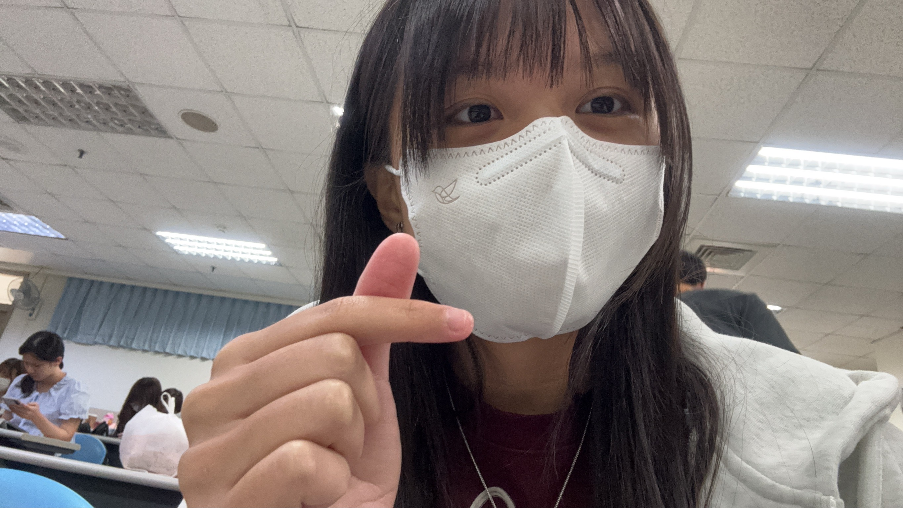

01 / 關於我
優雅是第一印象，
可愛是意外日常。
大家好，我是呂珍妮，今年 19 歲。外人眼裡的我落落大方、文質彬彬；但一進入朋友模式，嘴賤指數就會直接點滿。
走在路上遇到小貓咪，我會瞬間變成 19 個月大的寶寶，忍不住開始大叫。平常上課偶爾搗麻糬、滑手機玩糞 Game，不過考試倒是常常能順利過關。
我可能嘴巴有點欠，但對朋友可是體貼又暖心。只要你需要，我都會認真替你加油、陪你一起面對。
— 珍妮
02 / 基本資料
認識我的關鍵字
三個小資訊，快速認識珍妮。
03 / 我的日常
反差感，是我的日常。
優雅、毒舌、貓奴、學霸，還有一點精靈系的自信——這些都是真實的我。
貓咪雷達全開
路上只要出現小貓咪，理智就會短暫離線，秒變興奮寶寶。
朋友模式啟動
嘴上可能不饒人，但朋友需要的時候，我一定暖心力挺。
看似隨性，其實可靠
上課有我的小日常，考試也能好好過關，關鍵時刻還是很可以。
THAT'S ME
「嘴巴欠扁是真的，
對朋友好也是真的。」
既迷人又暖心，很高興認識你。
回到最上面 ↑